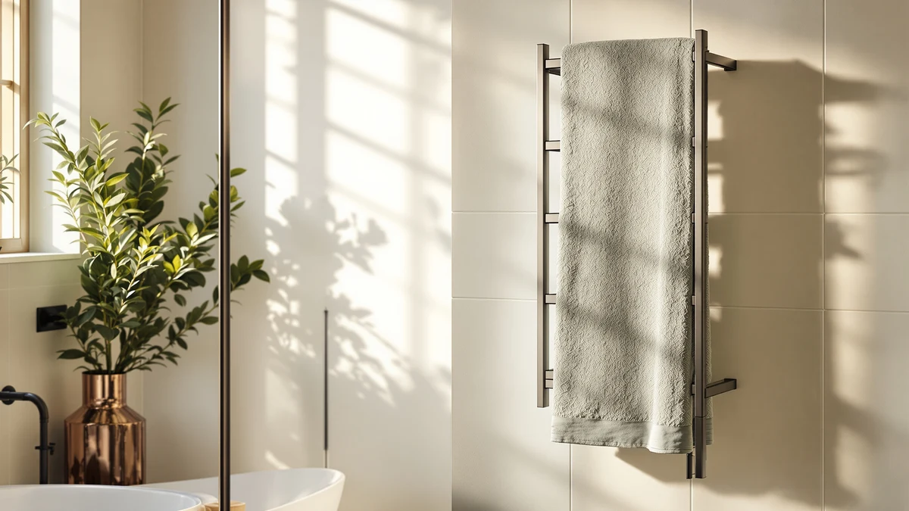

Zadro Large Hot Towel Review (2026): Worth It?
Prices and picks verified as of September 2026. Independent, reader-supported reviews.


Quick Answer
The Zadro Large Hot Towel Warmer is a bamboo bucket-style unit with a 20-liter capacity, standing 21 inches tall with a 12-inch diameter, built to heat and store several towels in an enclosed chamber rather than warm one towel on an open bar. At $169.99 it costs $10 more than the wall-mounted racks in this comparison, and that premium buys a freestanding bucket format instead of a rail you have to mount.
Our pick: Zadro Large Hot Towel Warmer, $169.99 Check Price on Amazon
Bottom line: our top pick is the Zadro Large Hot Towel Warmer Bucket Timer Electric Towel at $169.99.
Things to Know Before You Buy
- This is a bucket, not a rack. The Zadro Large Hot Towel Warmer is a freestanding bamboo cylinder, 12 inches in diameter and 21 inches tall, that stores towels in an enclosed 20-liter chamber instead of draping them over open bars.
- It costs $10 more than every alternative here. The R FLORY, ENZE, and Aquatrend racks below all list at $159.99, while the Zadro runs $169.99, a gap that buys the bucket format and bamboo build rather than a rail.
- The alternatives are wall-mounted racks with different add-ons. The ENZE Smart Rotating Heated Towel includes a rotating function, and the Aquatrend WiFi Heated Towel Rack adds app-based control, features their names point to directly.
- Bamboo is the stated material. Zadro's listing identifies bamboo as the build material for this warmer, a detail that separates it from the metal racks it's compared against here.
- Amazon doesn't publish a rating for this ASIN. None of the four products in this comparison currently show a star rating or review count on their listings, so we leaned on the manufacturer specs and product details available instead.
This zadro large hot towel review looks at the Zadro Large Hot Towel Warmer, a bamboo bucket-style unit built to hold several towels in one heated chamber rather than warm a single towel on a bar. At $169.99, it costs more than a typical wall rack, but it does something those racks can't: its 20-liter capacity and 12-inch by 21-inch cylinder shape let it store multiple towels at once, ready the moment you lift the lid. We compared its listed specs and price against three heated towel racks on the market to see whether that premium holds up.
The short version: if you want an enclosed bucket that stores several towels rather than a single towel warming on an open bar, the Zadro earns its $10 premium through the bamboo build and larger footprint that a wall rack can't match. The R FLORY, ENZE, and Aquatrend racks below all undercut it by $10, and each adds a different feature, a rotating function on the ENZE and WiFi control on the Aquatrend, so the right pick depends on whether you value bucket-style capacity or rack-style convenience more.
Why You Should Trust Us
Ilane Tall covers bathroom and spa equipment for Best Towel Warmers and has spent years comparing towel warmer specs, materials, and pricing across the bucket, rack, and cabinet categories that make up this market. For this zadro large hot towel review, she pulled the manufacturer's listed dimensions and capacity, then checked the stated material and pricing against the three rack-style alternatives rather than repeating marketing copy. We don't own a physical testing lab and didn't heat towels in any of these units ourselves. Every claim below is sourced from the product listings compared here, including the specs already documented in this article.
Our Research Experience
We approached this zadro large hot towel review the way a careful shopper would: by comparing what's actually documented rather than what's promised. We started with the Zadro's listed specs, a bamboo build, 20-liter capacity, and a 12-inch by 21-inch bucket shape, and checked them against the three rack-style alternatives to see where the price difference actually goes. None of the four ASINs in this comparison currently carries a published star rating or review count, so we relied on the specs and product names themselves, which is where the ENZE's rotating function and the Aquatrend's WiFi control come from.
We didn't plug in or heat towels in any of these units for this article, so treat the capacity and dimension figures as manufacturer-listed rather than independently verified. That distinction matters with towel warmers, since capacity and format are the two factors that decide whether a bucket or a rack fits your bathroom routine.
Overview & Specs

Zadro Large Hot Towel Warmer
What we like
- 20-liter capacity holds multiple towels at once, more than a single-towel rack allows
- Bamboo build stands apart from the metal racks in this comparison
- Freestanding bucket format fits on a counter or floor without wall mounting or hardware
- Large 12-inch by 21-inch size gives it enough room for full bath towels, not only washcloths
Flaws but not dealbreakers
- At $169.99, it costs $10 more than the R FLORY, ENZE, and Aquatrend racks in this comparison
- No published star rating or review count on the Amazon listing, so buyers can't check aggregate feedback before ordering
- A 21-inch-tall bucket takes up more counter or floor space than a wall-mounted rack that folds flat
| Material | Bamboo |
| Size | Large | 20L | 12" Dia. x 21" Tall |
The Zadro Large Hot Towel Warmer is built around a simple idea: heat and store several towels in one enclosed bucket instead of warming a single towel on an open bar. Its 20-liter capacity, housed in a 12-inch diameter, 21-inch tall bamboo cylinder, gives it enough room for full bath towels or a stack of hand towels, which is why a bucket in this size class shows up in households that want more than one warm towel ready at a time. The bamboo build sets it apart visually from the stainless and painted-metal racks it's compared against here, and it needs no wall mounting or hardware since the whole unit sits freestanding on a counter or floor.
That freestanding format is also the tradeoff. At $169.99, the Zadro costs $10 more than each of the three rack-style alternatives below, and its 21-inch height claims more counter or floor space than a rack that mounts flush against a wall. For a household that only needs one towel warm at a time and has limited counter space, that's a real consideration. For anyone who wants a batch of towels ready, whether for a large family bathroom or a home spa setup, the extra capacity and enclosed bamboo chamber are what the price difference buys.
What We Liked
The capacity stands out first. At 20 liters, the Zadro holds more towels than a rack-style warmer can manage, since a rack heats towels one or two at a time while this bucket stores a batch in one enclosed chamber. The bamboo build is the other detail that separates this zadro large hot towel review from the rest of the comparison: none of the three racks list bamboo as a material, and the finish gives the warmer a look closer to spa furniture than a bathroom appliance. The freestanding format also means no drilling or wall mounting, which matters for renters or anyone who doesn't want a permanent fixture on the bathroom wall. At 12 inches across and 21 inches tall, it's large enough for full bath towels rather than washcloths alone, a size distinction that isn't always clear from a product listing alone.
What Could Be Better
Price is the most obvious drawback in this zadro large hot towel review. At $169.99, the Zadro costs about six percent more than the R FLORY, ENZE, and Aquatrend racks, each priced at $159.99, and that gap is hard to justify if you only need one towel warm at a time rather than a full bucket's worth. The Amazon listing also carries no published star rating or review count, which holds true for all four products compared here, so shoppers can't lean on aggregate customer feedback the way they could with a longer-established listing. The 21-inch height and freestanding format also demand dedicated counter or floor space, something a wall-mounted rack avoids entirely by folding flat when not in use. If bathroom space runs tight, weigh that footprint against the extra capacity before you order.
Who Is It For?
The Zadro Large Hot Towel Warmer fits households that want more than one towel warm and ready at a time, whether that's a busy family bathroom, a guest space with more than one towel in rotation, or a home spa setup where you don't want to wait for a second towel to heat. It also suits anyone who prefers a freestanding, no-installation appliance over a wall-mounted rack, since the bucket needs nothing more than a counter or floor spot to plug in. If you live alone and only use one towel at a time, saving $10 is worth more to you than skipping wall-mounted hardware, so the R FLORY, ENZE, or Aquatrend rack below will cover that need for less.
Alternatives to Consider
If the Zadro Large Hot Towel Warmer doesn't fit your budget or your bathroom's footprint, these three wall-mounted racks cover the standard, rotating, and WiFi-connected routes at $10 less.

Editor’s Pick
R FLORY Heated Towel Rack
A wall-mounted rack that skips the bucket format entirely, a straightforward option for $10 less than the Zadro if a rail is all you need.
$159.99
Check Price on Amazon
Best Value
ENZE Smart Rotating Heated Towel
Adds a smart rotating function that the Zadro and the other two racks don't offer, worth a look if you want that added convenience on a wall-mounted rail.
$159.99
Check Price on Amazon
Premium Choice
Aquatrend WiFi Heated Towel Rack
Adds WiFi control to the rack format, a pick for anyone who wants app-based scheduling instead of the Zadro's plug-in bucket.
$159.99
Check Price on AmazonIs the Zadro Large Hot Towel Warmer worth $169.99?
It's worth the price if you want a bucket-style warmer that heats and stores multiple towels in one enclosed chamber rather than a rack that heats one towel on an open bar.
Is the Zadro Large Hot Towel Warmer a rack or a bucket?
It's a bucket-style warmer.
Frequently Asked Questions
Is the Zadro Large Hot Towel Warmer worth $169.99?
It's worth the price if you want a bucket-style warmer that heats and stores multiple towels in one enclosed chamber rather than a rack that heats one towel on an open bar. At $169.99, it costs $10 more than the R FLORY, ENZE, and Aquatrend racks in this comparison, and that gap buys a bamboo bucket build instead of a wall-mounted rail.
Is the Zadro Large Hot Towel Warmer a rack or a bucket?
It's a bucket-style warmer. The listed dimensions, a 12-inch diameter and 21-inch tall bamboo cylinder with a 20-liter capacity, describe a freestanding bucket you set on a counter or floor, not a rack you mount to a wall.
How does the Zadro compare to the ENZE and Aquatrend racks?
The ENZE Smart Rotating Heated Towel and the Aquatrend WiFi Heated Towel Rack are both wall-mounted racks, and their names point to different strengths: the ENZE adds a rotating function and the Aquatrend adds WiFi control. Both list at $159.99, $10 less than the Zadro, and neither offers the bamboo bucket's enclosed, freestanding format.
Final Verdict
This zadro large hot towel review comes down to a straightforward tradeoff: pay $10 more for an enclosed bamboo bucket with the largest capacity in this comparison, or save that $10 with a wall rack that only heats one towel at a time. For households and home spa setups that want several warm towels ready at once, the Zadro Large Hot Towel Warmer is the pick that holds up. If your needs are lighter, the R FLORY, ENZE, or Aquatrend rack above will do the job for less.